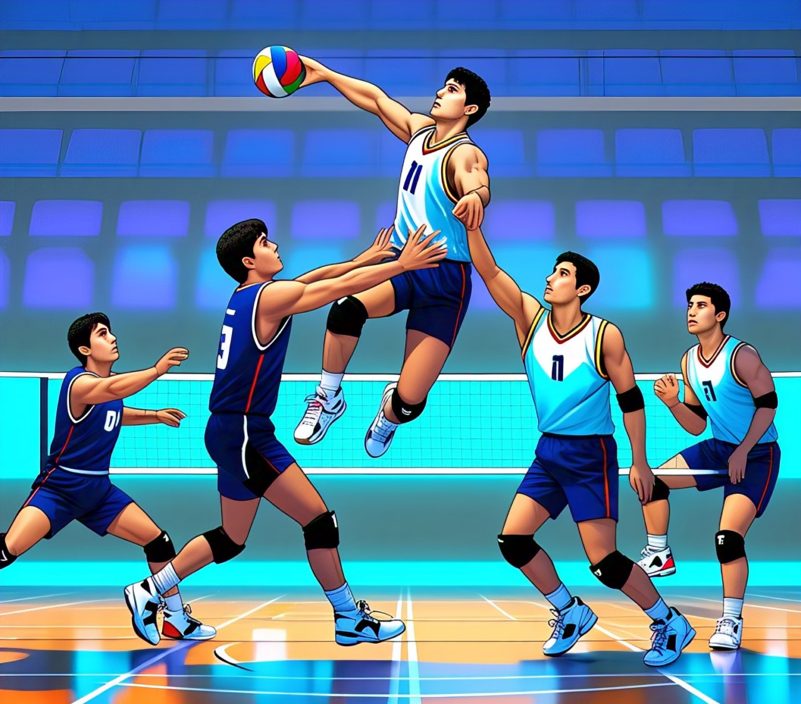

The Volleyball Game: A Complete Beginner’s Guide to Rules, Positions & Scoring
Volleyball is a fun, fast-paced sport that people of all ages enjoy. Whether you're playing at the beach, in the park, or in an organized league, knowing the basic rules, positions, and scoring methods will help you enjoy the game more and improve your skills. In this guide, we'll walk you through everything you need to know about the volleyball game as a beginner, including essential rules, player positions, scoring methods, and tips for success on the court.
The Spike Mod APK is a modified version of the popular mobile volleyball game The Spike. It offers enhanced features such as unlimited resources, unlocked characters, and additional game modes that are usually restricted in the original version. This version provides players with a more enjoyable gaming experience, allowing for faster progression and more customization. Whether you're a casual player or a volleyball enthusiast, this modded version offers a unique way to enjoy the game without limitations.
What is Volleyball?
Volleyball is a team sport played by two teams of six players each. The main goal of the game is to score points by sending the ball over a net and into the opponent's side of the court. Players hit the ball with their hands, trying to prevent the other team from doing the same. The team that wins the most points during a set wins the game.
Volleyball Rules for Beginners
- The Court and Teams: A volleyball court is divided by a net into two equal halves. Each team has six players who stand in specific positions. The court is 30 feet long and 60 feet wide. A team is allowed three touches per possession (before sending the ball over the net), but one player cannot touch the ball twice in a row.
- Serving the Ball: The game starts with one player serving the ball. The server must stand behind the end line and hit the ball over the net to the opponent’s side. If the ball touches the ground or goes out of bounds, the opposing team gets a point.
- Rotation: After winning a point, the players rotate in a clockwise direction. This ensures that all players take turns serving and playing different positions.
- Scoring: A match is usually played to 25 points, and a team must win by at least two points. If the score is tied at 24-24, the game continues until one team leads by 2 points.
- Illegal Hits: Some examples of illegal hits include carrying (holding the ball), double hits (touching the ball twice in a row), or lifting (when the ball is held in one spot too long).
- Faults: A fault occurs when a team makes a mistake. This could be hitting the ball out of bounds, serving into the net, or not following the proper rotation rules. When a fault is made, the other team earns a point.
Basic Volleyball Positions Explained
In volleyball, each player has a specific role or position on the court. Understanding these positions will help you work better with your teammates and improve your performance.
- Outside Hitter: The outside hitter is often the primary attacker on the team. This player hits the ball from the left side of the court and tries to score points by hitting the ball over the net.
- Setter: The setter is like the quarterback of a volleyball team. They control the offense by setting up the ball for the hitters.
- Libero: The libero is a defensive specialist who wears a different color jersey. This player does not attack the ball, but focuses on passing, digging, and receiving serves.
- Opposite Hitter: The opposite hitter plays on the right side of the court and plays a key role in both offense and defense.
- Middle Blocker: The middle blocker plays at the center of the court and is responsible for blocking the opponent’s attacks at the net.
- Defensive Specialist: A defensive specialist focuses on receiving serves and playing in the back row.

How to Score Points in Volleyball
Scoring in volleyball can be a bit tricky at first, but once you understand the rules, it becomes much easier to follow. Here's how you score points in volleyball:
- Rally Scoring: In rally scoring, every rally (a series of plays between teams) results in a point. The team that wins the rally gets the point, regardless of who served the ball.
- Winning a Rally: A team wins a rally if the opposing team fails to return the ball over the net, hits the ball out of bounds, or commits a fault.
- Winning a Set: A match is typically played in a best-of-three or best-of-five sets. To win a set, a team must reach 25 points and lead by at least two points.
Volleyball Terms and Definitions
- Ace: A serve that the opponent fails to return, resulting in a point.
- Block: A defensive move where a player tries to prevent the opponent’s attack from crossing the net by jumping in front of them.
- Dig: A defensive technique used to pass or save a low ball.
- Set: The act of delivering the ball to a teammate in an ideal position for an attack.
- Spike: A powerful attack where a player hits the ball over the net with force.
- Libero: A player who specializes in passing and playing defense in the back row.
Types of Serves in Volleyball
- Underhand Serve: The underhand serve is the easiest serve for beginners to learn.
- Overhand Serve: The overhand serve is a more advanced serve that is hit with a high toss.
- Jump Serve: The jump serve is an advanced technique where the server jumps before hitting the ball.
Beginner Volleyball Tips and Techniques
As a beginner, you’ll need to focus on some key techniques to improve your game. Here are a few tips:
- Practice passing, as it's one of the most important skills in volleyball.
- Work on your serving, starting with underhand serves and moving to overhand serves as you improve.
- Stay active, focused, and communicate with your teammates at all times.
- Remember to have fun and enjoy the game!

Conclusion
The volleyball game is an exciting sport that anyone can learn to play. By understanding the basic rules, positions, scoring methods, and tips for beginners, you’ll be ready to get out on the court and start playing. Whether you’re playing for fun or looking to compete, this guide will help you get started on the right foot!